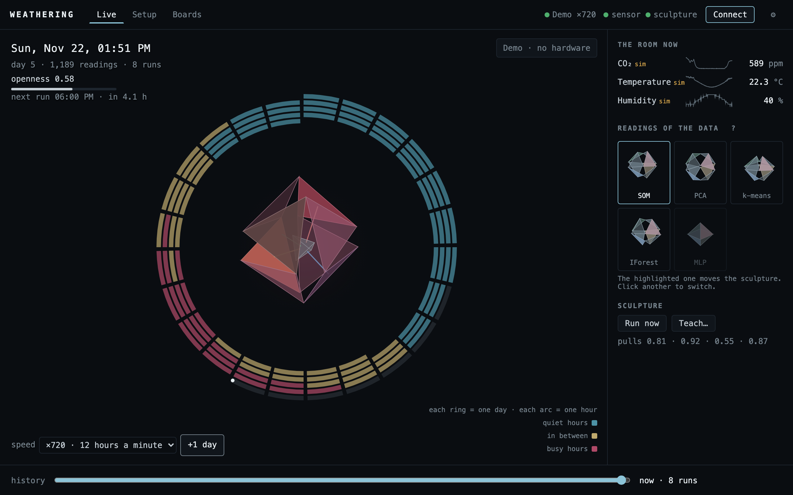
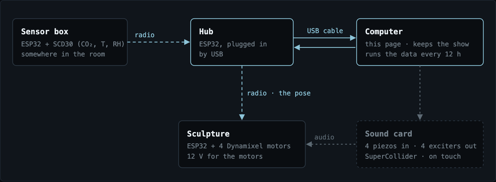
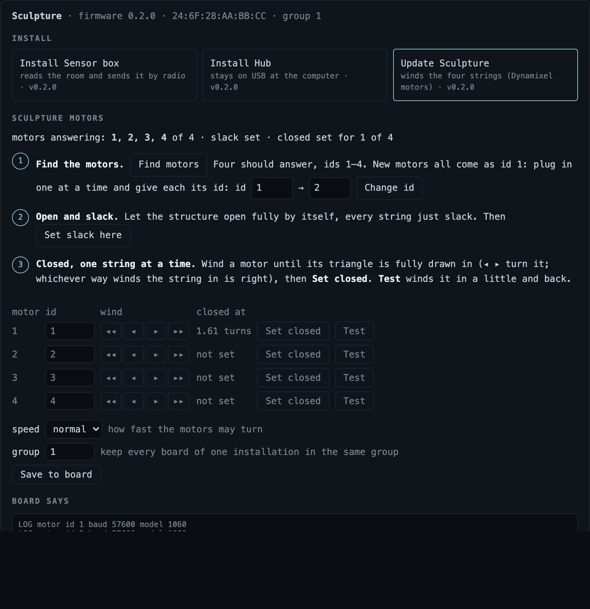
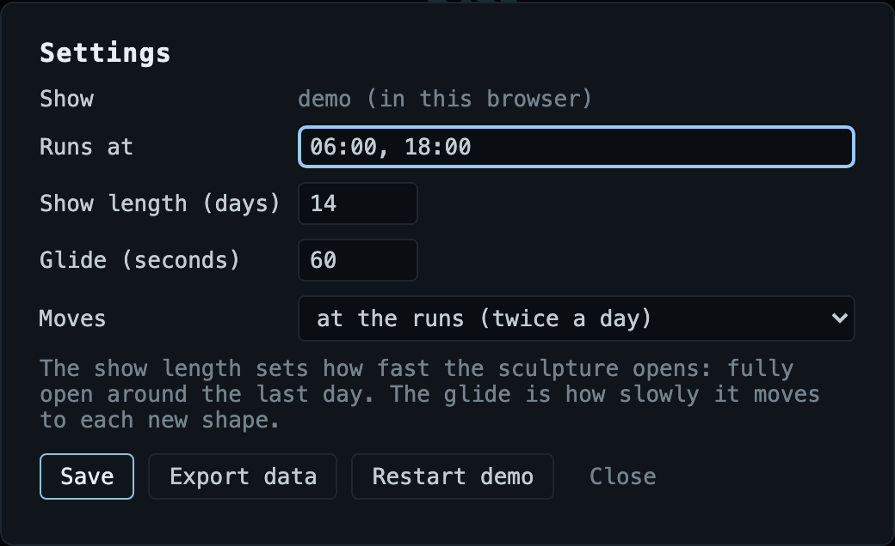

From an empty Mac and a box of parts to the running installation. Florian Goeschke (NPTX) · Miguel Angel Crozzoli (data, software) · guide for version 0.2 · November 2026

What it looks like when it runs: the twin of the sculpture inside one ring per day, the room's CO₂, temperature and humidity, the readings of the data, and the pulls the motors are given.
A Install on the computer (once) · about 30 min
B Try it without hardware · 5 min
C Install the three boards · 15 min
D Wire the sensor box
E Wire and calibrate the sculpture
F Sound: piezos and exciters
G Start the show
H Leave it running for weeks
I If something goes wrong
How it fits together. The sensor box (an ESP32 with the SCD30) reads the room every 5 minutes and sends it by radio to the hub (an ESP32 on a USB cable to the computer). The computer keeps every reading. Twice a day (06:00 and 18:00) it reads everything again and sends the sculpture (an ESP32 with the four Dynamixel motors) four pulls by radio — one per string. The show starts closed and opens as it lives. SuperCollider plays the four panels' feedback, silent until someone touches the sculpture.

A · Install on the computer (once)
A Mac with macOS 12 or newer. You need to be online for this part.
A1 · Google Chrome
If you don't have it: google.com/chrome → Download → open the file → drag Google Chrome into Applications.
Installing firmware on the boards (part C) only works in Chrome (or Edge), not Safari or Firefox. You don't have to make Chrome your default browser: when the app opens in Safari, copy its address (http://127.0.0.1:8770) into Chrome for part C.
A2 · Weathering itself
Open github.com/mCrozzoli/weathering in a browser.
Green button Code → Download ZIP. Double-click the downloaded weathering-main.zip: it becomes a folder weathering-main.
Move that folder somewhere it can stay, e.g. Documents. Don't rename the files inside it.
a folder with Weathering.command, Weathering demo.command, Weathering live sound.command, and folders app, docs, firmware, sc…
A3 · Python (to run the app)
Open Terminal (Applications → Utilities → Terminal, or ⌘-Space and type Terminal).
Type python3 --version and press Return.
If it prints Python 3.9 or higher: done. If a window asks to install the command line developer tools: click Install, agree, wait (5–15 min), then type the command again. If it says command not found: install Python from python.org/downloads (the big yellow button), then try again.
A4 · SuperCollider (the sound)
supercollider.github.io/downloads → macOS → download the current version (3.13 or newer).
Open the downloaded .dmg, drag SuperCollider into Applications.
Open it once from Applications (if macOS asks, click Open), let it start, then quit it (⌘Q). From now on Weathering starts it by itself, without its window.
CoFlo holds the feedback back when it locks onto one tone. It works best with Chris Kiefer's CccRPC plug-in, which has to be built on each computer. Without it the sound still works with a simpler measure (and says so).
Install Homebrew: copy the one-line command from brew.sh into Terminal, press Return, type your Mac password when asked (you won't see it as you type), follow what it prints at the end (it may ask you to paste two more lines).
In Terminal: brew install cmake
In Terminal, type cd (with a space), drag the weathering-main folder onto the Terminal window, press Return. Then:
bash tools/build_cccrpc.sh
It downloads and builds for a few minutes. If it says it is installing the command line tools first, let it finish and run the same line again.
Installed to: …/SuperCollider/Extensions/Ccc at the end.
B · Try it without hardware
In the weathering-main folder, double-click Weathering demo.command.
The first time macOS may say it cannot be opened or cannot verify the developer. Click Done/OK, then right-click (or Control-click) the file → Open → Open. (On macOS 15: System Settings → Privacy & Security → scroll down → Open Anyway.) You only do this once per file.
A Terminal window opens and says one-time setup… (about 15 s, the first time only), then the app opens in your browser.
the Live view with “Demo” in the top bar. Twelve hours pass every minute; after a minute or two the rings fill, the readings change and the twin starts to open. You may hear the four virtual panels now and then (an imaginary visitor knocks); Touch knocks too.
Try: click another reading (SOM, PCA, k-means, IForest) to let it move the twin; slide history back; Teach… to shape your own mapping (MLP). To stop: click Quit at the top right, then close the Terminal window.
The demo keeps its pretend show separate from the real one, so nothing you do here ends up in the exhibition.
C · Install the three boards
Each ESP32 gets its part once: Sensor box, Hub, Sculpture. Label them (tape and a pen) as you go.
Double-click Weathering.command (the real one, not the demo). If the page opens in Safari, copy its address into Chrome.
Click Boards at the top.
Plug one ESP32 into the Mac with a USB data cable.
Connect a board… → Chrome lists the ports → pick the ESP32 (it is called something like cu.usbserial-…, cu.SLAB_USBtoUART or cu.wchusbserial…, not Bluetooth) → Connect.
The panel says No Weathering firmware on this board yet (or which part it has). Click Install Sensor box (or Hub, or Sculpture). A bar fills in about a minute.
No port in Chrome's list? Try another cable (many USB cables only charge). “No answer from the board”? Hold the board's BOOT button, click Install again, let go when the bar starts. “The app is holding the hub's USB port”? Top bar Connect → Disconnect the hub first.
D · Wire the sensor box
SCD30
ESP32 (sensor box)
VIN
3V3
GND
GND
SDA (RX/SDA)
GPIO 21
SCL (TX/SCL)
GPIO 22
SEL
open
(= I²C)
Wire it with the board unplugged, then plug it in by USB: in Boards → Connect a board… choose it.
The panel says sensors found: scd30. Click Read now.
CO₂ around 400–1000, a plausible temperature and humidity, with no “(sim)” after them. “(sim)” means that value is invented because the sensor wasn't found: check the four wires.
Place it in the room away from the ESP32 and its charger (they warm it), out of sun and breath. Power it with any USB phone charger.
More data later: a BH1750 light sensor and a microphone module can join the same box; tick light / sound level under part of the show and Save to board. Until then the show uses CO₂, temperature and humidity only.
E · Wire and calibrate the sculpture
E1 · Wiring (as on your TTGO tests)
From
To
ESP32 GPIO 32 (TX)
1 kΩ → Dynamixel DATA
ESP32 GPIO 33 (RX)
Dynamixel DATA, directly
ESP32 GND
Dynamixel GND and the 12 V supply's GND
grounds joined
12 V +
Dynamixel VDD
never into the ESP32
The four XL430 are daisy-chained. Motor 1 winds the string of triangle 1 (red in the twin), motor 2 orange, 3 green, 4 blue.
E2 · Calibration (once, and again only if strings or spools change)
The sculpture's ESP32 on the Mac by USB, the motors on 12 V. Boards → Connect a board… → the sculpture's port.

Find motors. Four should answer: ids 1, 2, 3, 4. Fewer? New XL430s all come as ID 1, and two motors with the same ID can't both answer. Unplug the chain, plug in one new motor, set 1 → 2, Change id; next motor alone 1 → 3; next 1 → 4. Then chain all four again and Find motors.
Open and slack. Let the structure open fully by itself, every string just slack (no tension, no loops). Click Set slack here and confirm. This is pull 0.
Closed, one string at a time. For motor 1: click ▸ a few times. If the string winds in, keep going (▸▸ = ⅛ turn) until its triangle is fully drawn in; if it lets out, use ◂ instead — either way is fine. Then Set closed. The row shows the travel, e.g. 1.61 turns. Do the same for motors 2, 3, 4.
Test each motor: it winds in a little and back.
Choose speed (normal) and Save to board.
motors answering: 1, 2, 3, 4 · slack set · closed set for 4 of 4.
Safety, built in. The sculpture never assumes that where it is at power-up is slack. It remembers its slack point, its travel and its last position, and checks them every time it starts. If they don't match (a spool was turned by hand, a string changed), it holds no torque and ignores the data until you do Set slack here again with the structure open. The app then shows needs calibrating. It can never wind past the closed point you set.
F · Sound: piezos and exciters
Piezo of panel k → input k of the 4-in/4-out audio interface; output k → amplifier → exciter of panel k (panel = the triangle string k pulls).
System Settings → Sound: choose the interface as Output and as Input. Both at the same sample rate (Audio MIDI Setup → the interface → 48 000 Hz for in and out).
Amplifier volume low to start.
Double-click Weathering live sound.command (instead of Weathering.command). Click Touch or knock on a panel.
silence until the knock; then the panel rings for a few seconds and dies away. The top bar says sound on. Early in the show it barely answers (the sculpture is closed); it rings longer as the show opens.
Safety: an automatic gain and a limiter are always on. If it ever howls, close the Terminal window (or turn the amp down). Calibrating on the real panels: see README → Sound (WX_DEBUG=1 writes meters to ~/.weathering/sound.log).
G · Start the show
Power the sensor box (USB charger) and the sculpture (ESP32 by USB charger, motors on 12 V).
Plug the hub into the Mac.
Double-click Weathering live sound.command (or Weathering.command without the panels' sound).
Top bar: three green dots — Hub connected, sensor, sculpture. If the hub isn't found: Connect → its port. The sensor dot turns green with its first reading (within 5 minutes; a few seconds after it powers up).
⚙ → Start a new show… → a name (e.g. Athens 2026). Everything from setting up stays in the old show; the new one starts closed: the sculpture winds all strings in now.
In ⚙ check: Runs at06:00, 18:00 · Show length (days: it is fully open around the last day) · Glide (how slowly it moves) · Moves: at the runs (default) or live (it also follows every reading in between). Save.
Optional check: Run now reads the data at once (on a new show: still closed, there isn't enough data yet).

Closing the page changes nothing: readings keep being saved. To look again, open http://127.0.0.1:8770. Quit (top right) stops everything.
H · Leave it running for weeks
System Settings → Energy (or Battery → Options): prevent sleep when the display is off; Start up automatically after a power failure.
System Settings → General → Login Items → + → Weathering live sound.command, so it starts again after a power cut.
Turn off automatic macOS updates for the show's duration.
The show lives in ~/.weathering/shows/<name>/: readings.csv, runs.jsonl, show.json. Copy that folder to keep it; ⚙ → Export data does the same from the page.
I · If something goes wrong
What you see
What to do
Page closed, browser crashed
Nothing lost. Open http://127.0.0.1:8770 again.
Mac restarted or crashed
Double-click the command again (or it starts by itself, see H). The show continues; a missed run happens at once; the sensor box sends the readings it kept (about three days' worth).
Sensor dot grey
Is the sensor box powered? Is it in the same group as the hub (Boards)? Too far from the hub (walls)? Put the hub on a USB extension nearer.
Sculpture dot amber, needs calibrating
Boards → Sculpture motors → Set slack here with the structure open (E2). The closed points are kept.
Sculpture dot amber, a motor silent
12 V on? The chain's cables seated? Boards → Find motors.
Values marked sim
A sensor isn't found and is being simulated: check its wires (D).
no SuperCollider: silent
Install SuperCollider (A4) and start again.
Sound too loud / howling
Amplifier down; close the Terminal window to stop all sound at once.
“cannot be opened” for a .command
Right-click → Open → Open (B2).
More detail: README.md (how it works), docs/HARDWARE.md (parts, wiring, USB commands), docs/PROTOCOL.md (the boards' language). Questions: Miguel.